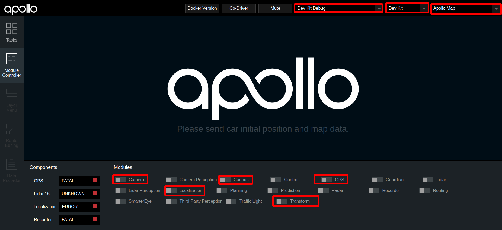

基于摄像头的封闭园区自动驾驶搭建--感知适配#
概览#
该用户手册旨在帮助用户完成摄像头感知适配，实现Camera感知
前提条件#
-
正确完成了循迹搭建--车辆循迹演示。
-
正确完成了基于摄像头的封闭园区自动驾驶搭建--感知设备集成。
-
正确完成了基于摄像头的封闭园区自动驾驶搭建--感知设备标定。
配置文件的修改#
| 序号 | 待修改文件 | 修改内容 |
|---|---|---|
| 1 | modules/common/data/global_flagfile.txt |
添加--half_vehicle_width=0.43 |
启动Camera感知#
把车辆开到户外，手动控制车辆，看感知是否有数据。
1. 启动can卡
进入can卡目录启动can卡，用以下命令启动
cd ~/SocketCan/
bash start.sh
2. 编译项目，启动Dreamview
进入docker环境，用gpu编译项目，启动Dreamview
cd apollo
bash docker/scripts/dev_start.sh
bash docker/scripts/dev_into.sh
bash apollo.sh build_opt_gpu
bash scripts/bootstrap.sh
3. 启动所需模块
在浏览器中打开(http://localhost:8888),选择模式为Dev Kit Debug， 选择车型为dev_kit并选择相应高精地图，在Module Controller标签页启动Canbus、Camera、GPS、Localization、Transform模块。

4. 检查各模块channel是否正确
在docker中输入cyber_monitor命令并检查以下channel（使用上下方向键选择channel，使用右方向键查看channel详细信息）：
| channel_name | 检查项目 |
|---|---|
/apollo/localization/pose |
确保能正常输出数据 |
/apollo/sensor/gnss/best_pose |
确保能正常输出数据、sol_type: 选项显示为NARROW_INT |
/apollo/sensor/camera/front_6mm/image |
确保能正常输出数据，帧率稳定在15HZ左右 |
/apollo/sensor/camera/front_12mm/image |
确保能正常输出数据，帧率稳定在15HZ左右 |
/tf |
确保能正常输出数据 |
/tf_static |
确保能正常输出数据 |
/apollo/canbus/chassis |
确保能正常输出数据 |
/apollo/canbus/chassis_detail |
确保能正常输出数据 |
5. 启动Camera感知
在dreamview中启动Camera Perception模块，使用cyber_monitor查看/apollo/perception/obstacles是否正常输出，并在dreamview上查看障碍物信息：

6. 验证Camera感知效果
查看车前方运动的人或者自行车（自行车上要有人），在DreamView上查看障碍物颜色以及位置速度信息（自行车青蓝色，行人黄色，车辆绿色），如下图所示：

/apollo/perception/obstacles的数据如下图所示：

如果在dreamview上能看到障碍物并且/apollo/perception/obstacles有障碍物信息，则开环测试通过。
NEXT#
现在，您已经完成摄像头感知适配，接下来可以开始封闭园区自动驾驶搭建--规划适配
常见问题#
1. 感知的输出帧率达不到10帧
建议使用 bash apollo.sh build_opt_gpu 编译Apollo工程
2. 感知的障碍物位置与实际障碍物误差较大
- 确认localization信号状态，保证
/apollo/sensor/gnss/best_pose中sol_type选项显示为NARROW_INT - 保证各个传感器外参文件准确